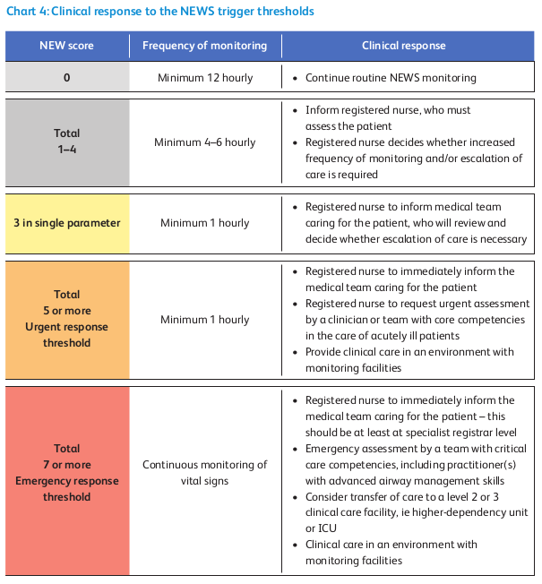
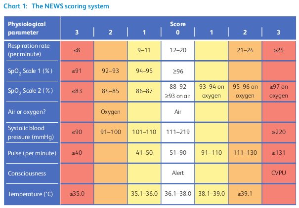
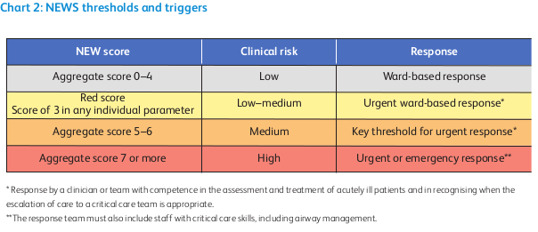

National Early Warning Score (NEWS) 2
This CPG was developed from the Royal College of Physicians (RCP) NEWS2 guideline (2017).
Work Plan
The work plan part of NEWS2 is mainly based on the clinical response part of the guideline, reproduced below.

Figure 1. NEWS2 clinical response
TODO: Work Plan
Decision Logic Module
The decision logic part of NEWS2 is mainly based on the NEWS2 score and triggers parts of the guideline, reproduced below.

Figure 2. NEWS2 score

Figure 3. NEWS2 thresholds and triggers
dlm NEWS2.v0.5.0
definitions -- Descriptive
language = {
original_language: [ISO_639-1::en]
}
;
description = {
lifecycle_state: "unmanaged",
original_author: {
name: "Thomas Beale",
email: "thomas.beale@openEHR.org",
organisation: "openEHR Internaitonal <https://www.openEHR.org>",
date: "2021-03-01"
},
details: {
"en" : {
language: [ISO_639-1::en],
purpose: "We recommend that the NEWS is used to improve the following:
i the assessment of acute-illness severity
ii the detection of clinical deterioration
iii the initiation of a timely and competent clinical response.",
use: "NEWS2 should be used to standardise the assessment of acute-illness severity
when patients present acutely to hospital and in prehospital assessment,
ie by the ambulance services.
NEWS should also be used in emergency departments and as a surveillance system
for all patients in hospitals, to track their clinical condition, alert the
clinical team to any clinical deterioration and trigger a timely clinical
response.",
misuse: "NEWS should not be used in children (ie aged <16 years) or in women who are
pregnant, because the physiological response to acute illness can be modified
in children and by pregnancy. The NEWS may be unreliable in patients with
spinal cord injury (especially tetraplegia or high-level paraplegia),
owing to functional disturbances of the autonomic nervous system.
Use with caution."
}
},
copyright: "© 2021 openEHR Foundation",
licence: "Creative Commons CC-BY <https://creativecommons.org/licenses/by/3.0/>",
ip_acknowledgements: {
"RCP" : "Reproduced from: Royal College of Physicians. National Early Warning Score (NEWS) 2:
Standardising the assessment of acute-illness severity in the NHS. Updated report of
a working party. London. © Royal College of Physicians 2017.
See https://www.rcplondon.ac.uk/projects/outputs/national-early-warning-score-news-2"
},
references: [
"xxxx."
]
}
;
use
BASIC: Basic_patient_data
input -- Historic State
|
| True if subject has a normal target SpO2, e.g. not in hypercapnic
| respiratory failure or similar condition
|
has_normal_target_oxygen_sat: Boolean
input -- Tracked State
pulse: Count
currency = 1 hr
;
|
| Systolic BP (mmHg)
|
systolic_BP: Real
currency = 1 hr
;
|
| Oxygen saturation %
|
SpO2: Real
currency = 1 hr
;
respiratory_rate: Integer
currency = 1 hr
;
|
| Core temperature in deg C
|
temperature: Real
currency = 1 hr
;
|
| #air | #oxygen
|
gases: Terminology_code «gases»
currency = 1 hr
;
|
| #alert: normally alert
| #CVPU: new confusion
|
conscious_state: Terminology_code «conscious_state»
currency = 1 hr
;
rules -- Main
respiratory_rate_score: Integer
Result := case respiratory_rate in
==============
|≤8|: 3,
--------------
|9..11|: 1,
--------------
|12..20|: 0,
--------------
|21..24|: 2,
--------------
|≥25|: 3
==============
;
|
| Scale 1 is used with most patients, except those with a lowered target SpO2,
| for whom the scale 2 form of scoring should be used.
|
SpO2_score_1: Integer
Result := case SpO2 in
==============
|≤91|: 3,
--------------
|92..93|: 2,
--------------
|94..95|: 1,
--------------
|≥96|: 0
==============
;
|
| Scale 2 is used only for patients with oxygen saturation (SpO2)
| target range of 88–92%, such as patients with hypercapnic
| respiratory failure (e.g. due to COPD). This score is partly
| conditional on which gases are being administered.
|
SpO2_score_2: Integer
Result := choice of
============================================
SpO2 ≤ 92: case SpO2 in
==============
|≤83|: 3,
--------------
|84..85|: 2,
--------------
|86..87|: 1,
--------------
|88..92|: 0
==============
;,
--------------------------------------------
SpO2 ≥ 93 and gases = #air:
0,
--------------------------------------------
SpO2 ≥ 93 and gases = #oxygen: case SpO2 in
==============
|93..94|: 1,
--------------
|95..96|: 2,
--------------
|≥97|: 3
==============
;
============================================
;
SpO2_score: Integer
Result := has_normal_target_oxygen_sat ? SpO2_score_1 : SpO2_score_2
;
gases_score: Integer
Result := case gases in
==============
#air: 0,
--------------
#oxygen: 2
==============
;
systolic_BP_score: Integer
Result := case systolic_BP in
================
|≤90|: 3,
----------------
|91..100|: 2,
----------------
|101..110|: 1,
----------------
|111..219|: 0,
----------------
|≥220|: 3
================
;
pulse_score: Integer
Result := case pulse in
================
|≤40|: 3,
----------------
|41..50|: 1,
----------------
|51..90|: 0,
----------------
|91..110|: 1,
----------------
|111..130|: 2,
----------------
|≥131|: 3
================
;
temperature_score: Integer
Result := case temperature in
=================
|≤35.0|: 3,
-----------------
|35.1..36.0|: 1,
-----------------
|36.1..38.0|: 0,
-----------------
|38.1..39.0|: 1,
-----------------
|≥39.1|: 2
=================
;
rules -- Output
|
| Generate NEWS2 score, taking into account variation in target O2 saturation,
| for which two SpO2 scoring scales are used
|
NEWS2_score: Integer
Result.add (
------------------
respiratory_score,
SpO2_score,
gases_score,
systolic_BP_score,
pulse_score,
temperature_score
------------------
)
;
|
| Has a score of 3 in any individual parameter
|
has_red_score: Boolean
Result :=
respiratory_score = 3 or
SpO2_score = 3 or
gases_score = 3 or
systolic_BP_score = 3 or
pulse_score = 3 or
temperature_score = 3
;
|
| Generate a clinical risk classification
|
clinical_risk: Terminology_code «NEWS2_clinical_risk»
Result := choice of
========================================
NEWS2_score in |0..4|: #low,
----------------------------------------
has_red_score: #low_to_medium,
----------------------------------------
NEWS2_score in |5..6|: #medium,
----------------------------------------
NEWS2_score ≥7: #high
========================================
;
|
| Convert score to a clinical response band
| NB: tese band names are not explicit in the published NEWS2
|
clinical_response_band: Terminology_code «NEWS2_clinical_response_band»
Result := choice of
=======================================
NEWS2_score = 0: #NEWS2_band_1,
---------------------------------------
NEWS2_score in |1..4|: #NEWS2_band_2,
---------------------------------------
has_red_score: #NEWS2_band_3,
---------------------------------------
NEWS2_score in |5..6|: #NEWS2_band_4,
---------------------------------------
NEWS2_score in |≥7|: #NEWS2_band_5
=======================================
;
|
| Generate a monitoring classification
|
clinical_monitoring: Terminology_code «NEWS2_clinical_monitoring»
Result := case clinical_response_band in
====================================================
#NEWS2_band_1: #minimum_12_hourly_monitoring,
----------------------------------------------------
#NEWS2_band_2: #minimum_4_to_6_hourly_monitoring,
----------------------------------------------------
#NEWS2_band_3,
#NEWS2_band_4: #minimum_1_hourly_monitoring,
----------------------------------------------------
#NEWS2_band_5: #continuous_monitoring
====================================================
;
definitions -- Terminology
terminology = {
term_definitions: {
"en" : {
"pulse" : {
text: "Pulse"
},
"systolic_BP" : {
text: "systolic blood pressure in mmHg"
},
"SpO2" : {
text: "Oxygen saturation"
},
"respiratory_rate" : {
text: "Respiratory rate"
},
"temperature" : {
text: "Core temperature"
},
"gases" : {
text: "Gases being adminsitered to subject"
},
"pulse_score" : {
text: "Pulse component of NEWS2 score"
},
"systolic_BP_score" : {
text: "systolic blood pressure component of NEWS2 score"
},
"SpO2_score" : {
text: "Oxygen saturation component of NEWS2 score"
},
"respiratory_rate_score" : {
text: "Respiratory rate component of NEWS2 score"
},
"gases_score" : {
text: "Gases component of NEWS2 score"
},
"temperature_score" : {
text: "Temperature component of NEWS2 score"
},
"NEWS2_score" : {
text: "NEWS2 score"
},
"oxygen" : {
text: "subject on positive-pressure oxygen"
},
"air" : {
text: "subject on positive-pressure air"
},
"alert" : {
text: "Subject is alert"
},
"CVPU" : {
text: "New confusion (C) or no response to voice (V), pain (P) or is unresponsive (U)"
},
"low" : {
text: "low risk"
},
"low_to_medium" : {
text: "low_to_medium risk"
},
"medium" : {
text: "medium risk"
},
"high" : {
text: "high risk"
},
"minimum_12_hourly_monitoring" : {
text: "minimum 12 hourly monitoring"
},
"minimum_4_to_6_hourly_monitoring" : {
text: "minimum 4-6 hourly monitoring"
},
"minimum_1_hourly_monitoring" : {
text: "minimum 1 hourly monitoring"
},
"continuous_monitoring" : {
text: "continuous monitoring"
}
}
},
value_sets: {
"conscious_state" : {
id: "conscious_state",
members: ["alert", "CVPU"]
},
"gases" : {
id: "gases",
members: ["air", "oxygen"]
},
"NEWS2_clinical_risk" : {
id: "NEWS2_clinical_risk",
members: ["low", "low_to_medium", "medium", "high"]
},
"NEWS2_clinical_monitoring": {
id: "NEWS2_clinical_monitoring",
members: ["minimum_12_hourly_monitoring", "minimum_4_to_6_hourly_monitoring",
"minimum_1_hourly_monitoring", "continuous_monitoring"]
},
"NEWS2_clinical_response_band": {
id: "NEWS2_clinical_response_band",
members: ["NEWS2_band_1", "NEWS2_band_2", "NEWS2_band_3", "NEWS2_band_4", "NEWS2_band_5"]
}
}
}
;Bindings
The following defines the logical bindings of DLM variables to back-end data.
--
-- Demographic items: AQL query
--
SELECT
OBS/data#at0001/events#at0002/data#at0003/items#at0004 AS date_of_birth,
OBS/data#at0001/events#at0002/data#at0003/items#at0008 AS sex
C/context/start_time AS time
FROM
EHR e[ehr_id/value=$ehrUid]
CONTAINS COMPOSITION C
CONTAINS OBSERVATION OBS[openEHR-EHR-OBSERVATION.basic_demographic.v1]
ORDER BY
time DESC
--
-- CHA2DS2-VASc input items
--
SELECT
OBS/data#at0002/events#at0003/data#at0001/items#at0026 AS has_congestive_heart_failure,
OBS/data#at0002/events#at0003/data#at0001/items#at0029 AS has_hypertension,
OBS/data#at0002/events#at0003/data#at0001/items#at0039 AS has_stroke_TIA_thromboembolism,
OBS/data#at0002/events#at0003/data#at0001/items#at0046 AS has_vascular_disease,
OBS/data#at0002/events#at0003/data#at0001/items#at0032 AS has_diabetes,
C/context/start_time AS time
FROM
EHR e[ehr_id/value=$ehrUid]
CONTAINS COMPOSITION C
CONTAINS OBSERVATION OBS[openEHR-EHR-OBSERVATION.chadsvasc_score.v1]
ORDER BY
time DESC